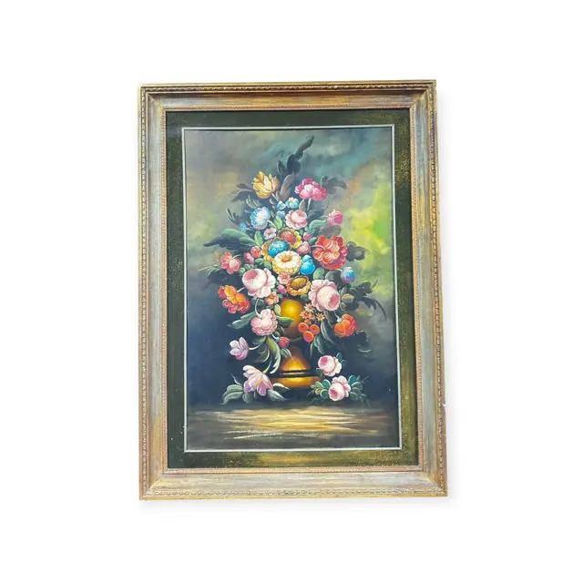
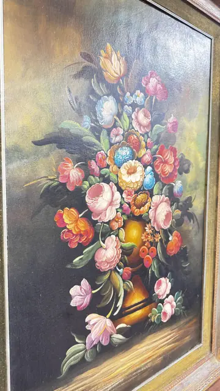

Paintings & Prints
Old Master Style Floral Still Life, Framed
· mid to late 20th century, in 18th-century taste
Price Upon Request


About the Item
A portrait-format canvas in the old-master manner: an abundant bouquet of roses, peonies, tulips, cornflowers and marigolds cascades from a burnished copper-gold urn standing on a shadowed ledge. The flowers are picked out in pink, cream, coral, blue and lemon against a deep olive and umber background that lightens to a soft yellow-green glow behind the blooms. Petals are painted wet-in-wet with soft loaded strokes and lit from the left, with the darkest passages sunk almost to black at the lower left. Medium: oil on canvas. Condition: the frame is deliberately distressed with rubbing to the gilt and visible red bole; the canvas shows a warm surface haze and some grime in the dark passages but no tears, flaking or obvious craquelure.
Details
- Creation Year:
- mid to late 20th century, in 18th-century taste
- Dimensions:
- Height: 44.5 in (113.03 cm)
Width: 33.0 in (83.82 cm)
outside of frame - Medium:
- oil on canvas
- Period:
- 20Th
- Condition:
- Offered in the condition shown in the photographs.
- Reference Number:
- VO-64
- Documentation:
- no certificate or label photographed; the reverse was not photographed